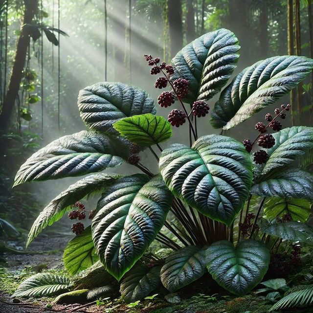
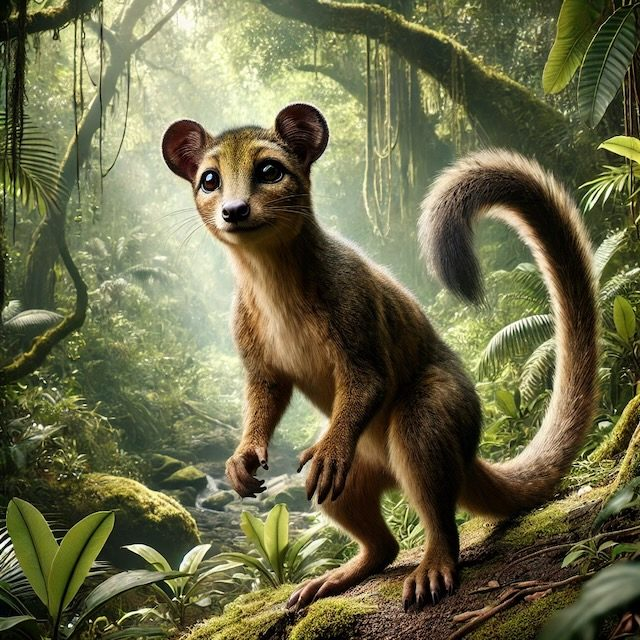
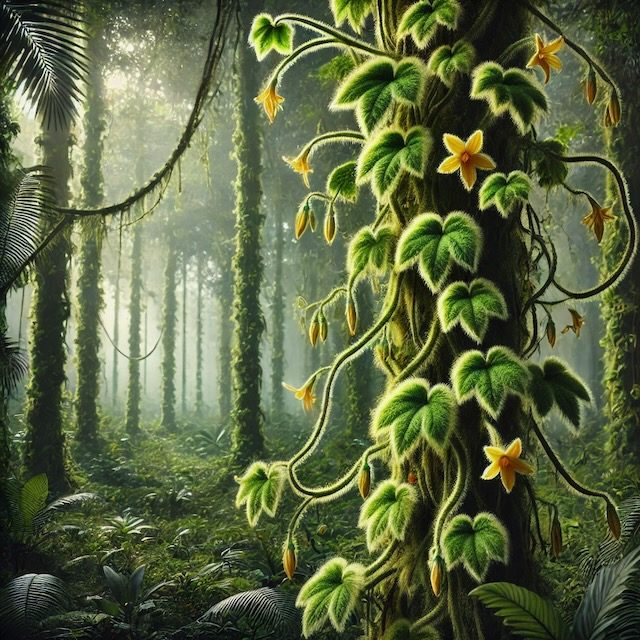
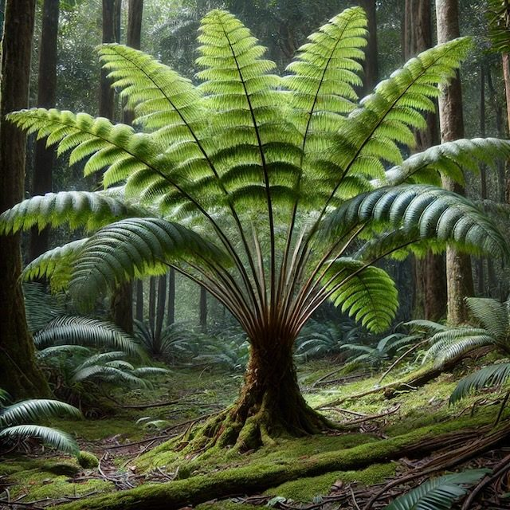
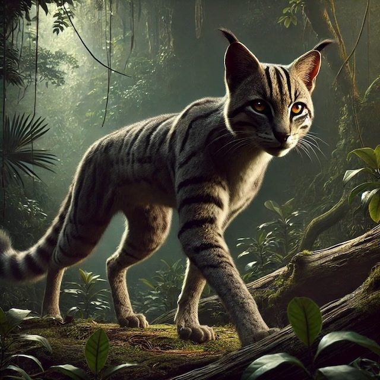
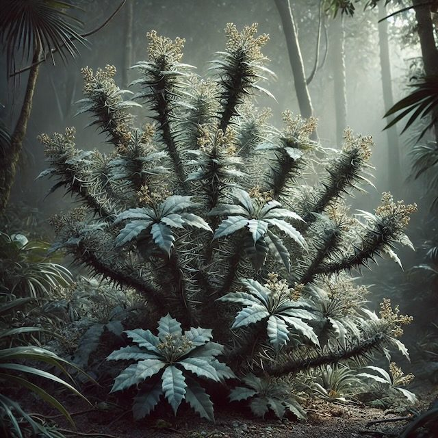

Umbrafruit Shrub
Fructumbra densis - these large, leafy shrubs provide both food and shelter to various fauna.
Newsletter0° N 0° E
Zero coordinates, zero excuses: protecting the Verdapix
A luscious island nation dedicated to conservation, located along the west coast of Africa at 0°N 0°E.
Hiking, rafting, safaris - oh my!
Discover Null Island's surreal beauty by trial, river, or road. Our network of 80 trails wind through lush rain forests, vast savannas, seasonal forests, and thriving wetlands. These biomes provide unique exposure to extensive flora and fauna unlike anywhere else on Earth.
Craving adventure? Navigate our 180+ rivers by raft. Care to cover milage with ease? We offer ride along safaris on our two main islands.
All exploration is accessible from the 99 cities - each one offering a one of a kind cultural experience.

This furry small to medium sized mammal is ingenious at camouflage loves to use its prehensile tail to climb its densely forested habitats. Three important plant species give the Verdapix the fuel to thrive:

Fructumbra densis - these large, leafy shrubs provide both food and shelter to various fauna.

Lianus vellatus - this vine climbs large trees and provides coverage for both animals and insects.

Palmopectis foliata - grown in clusters, these mid-sized trees provide sprawling canopies.

This muscular, striped predator lurks in the shadows around Null Island. Its favorite snack is our beloved (and endangered) Verdapix. Found hidden underneath the Ghostpine Thornbush throughout the tropical forests, this agile mammal camouflages perfectly.

Spinaumbralis spectralis - pale grey-green dense shrub with sharp spines attracts insects and hides predators.
The conservation research team were challenged to identify High Priority Habitats for the Verdapix.
The following habitat criteria had to be met in order to be classified as High Priority:
For ease of transportation, the research team needed to be headquartered in a city with the highest hectares of High Priority Habitat within 10 kilometers. Four potential cities were selected:
AxbridgetonTetrinchTindorehamBetrinch
Steps for selection
Various tools were used to determine these potential habitats.
This tool was used to separate the three different plant species data into a new feature class.
This tool was used to determine what areas on the Island contained all three plant species.
141 patches of potential habitat patches
This tool was used on the trail camera data layer to locate all potential habitat areas within 3km of each camera from March to May.
111 trail cameras were active between March and May
The potential habitats within the 3km buffer were clipped.
31 patches of High Priority potential habitats
A 10km buffer was applied around each city. The high priority data and city buffer data tables were spatially joined. Data was dissolved using the "contains" function which calculates how much high priority patches are within the 10km boundary. The hectares of high priority habitat within each city buffer were calculated using the calculate geometry feature in the table.
All proposed wildlife reserve sites needed to meet the following criteria:
The research team decided they wanted to focus their efforts in areas which contained more than just the listed criteria. The team is proposing larger areas in hopes of expansion - combining nearby potential reserve patches. This will provide both the three plant species and Verdapix to thrive in a secluded area with high growth potential.
Based on the calculation of these criteria - it was determined there were 25 potential patches. The research team has selected the top 3 areas for the sanctuaries.
Hugging one of Null Island's magnificent coastlines, Site A offers fabulous potential for a wildlife reserve site for the Verdapix. This area spans 9,082 hectares, has 18,953 meters of trails, and is just over 2 kilometers from the quiet town of Hornley. A combination of two potential patches within Site A amount to 3,022 hectares.
With no Ghostpine Thornbush, Site A is situated perfectly in tropical seasonal forest - a biome in which the Verdapix thrive. This area is off the beaten path at a distance of about 17 kilometers from the road. Thus, Site A is a highly undisturbed location for preserve the precious Verdapix.
Introducing Site B!
This site area spans 8,758 hectares, 2,203 of those hectares are of two combined potential patches.
Site B contains both tropical rainforest (the Verdapix's favorite) and tropical seasonal forest biomes. The combination of these canopies gives the Verdapix more area to flex its tail muscles and climb the highest of heights.
The closeness to the bustling city Wigford will give the conservationists an easy commute. Prefer something quieter? Just on the other side of the potential reserve, 3 kilometers away, is the sleepy village of Sealewich.
This quaint potential reserve location is nestled into the Island's famous tropical rainforest. Nearly 48 kilometers from any roadways, Site C mirrors the calmness of the nearby town of Maringra.
The site's 4,845 hectares contains two potential patches that combine to a total of 1,491 hectares. While Site C may be the furthest from the main drag, it is nearest to a patch of Ghostpine Thornbush (approximately 2km away). The researchers have still selected Site C as a potential sanctuary location due to the proportion of high rainforest trees compared to the distance from the shrubs.